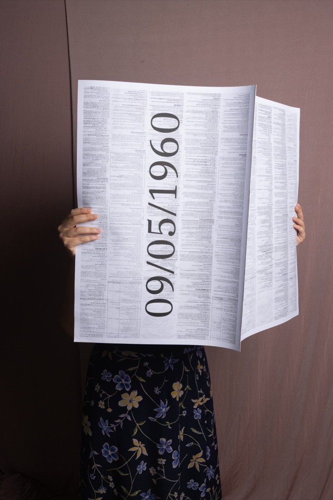
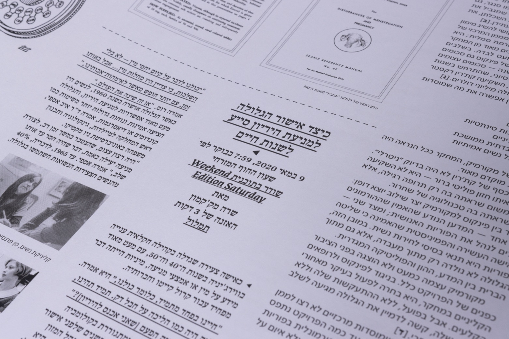
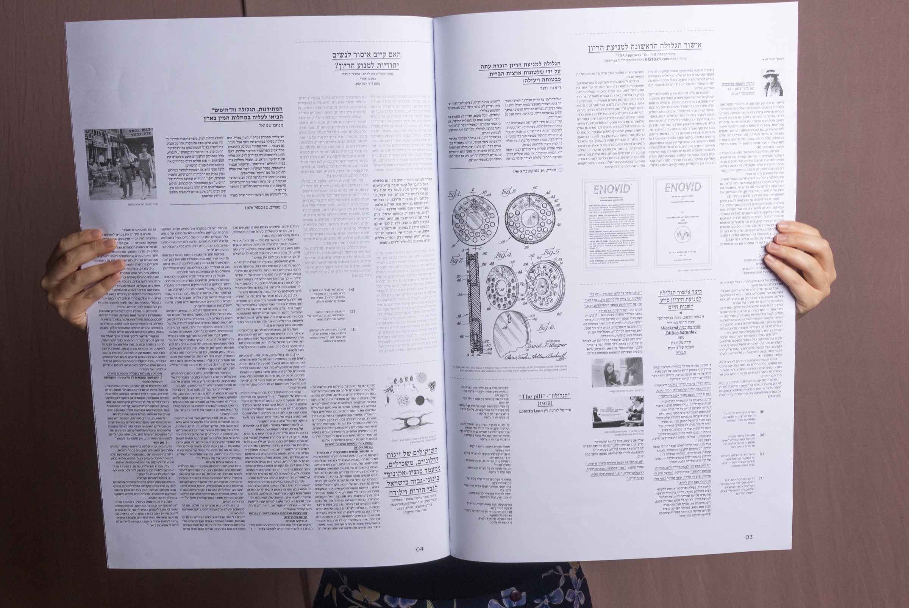
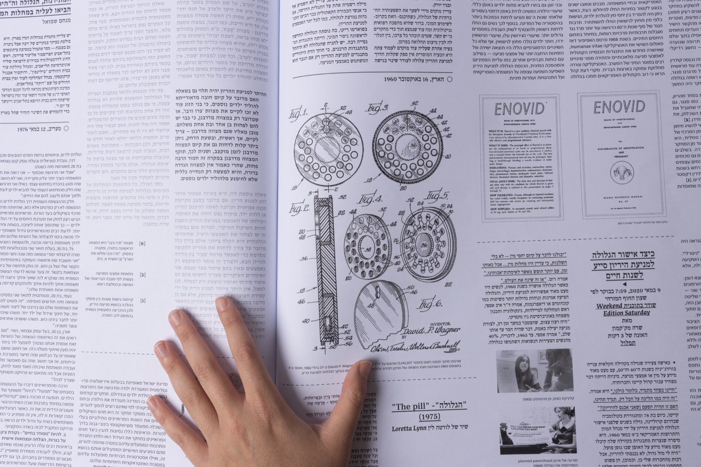
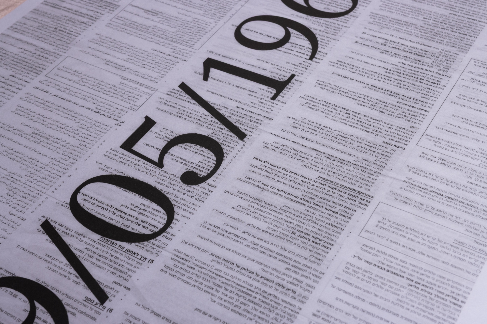
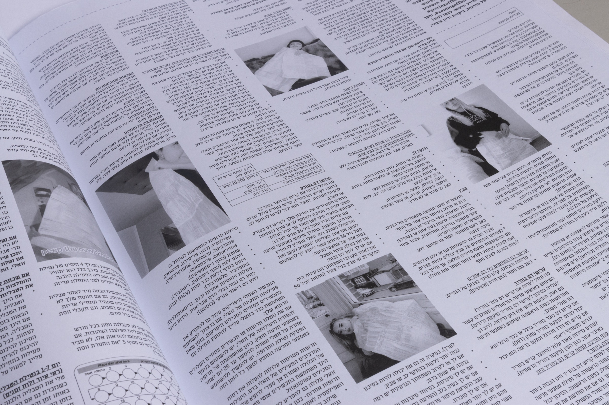
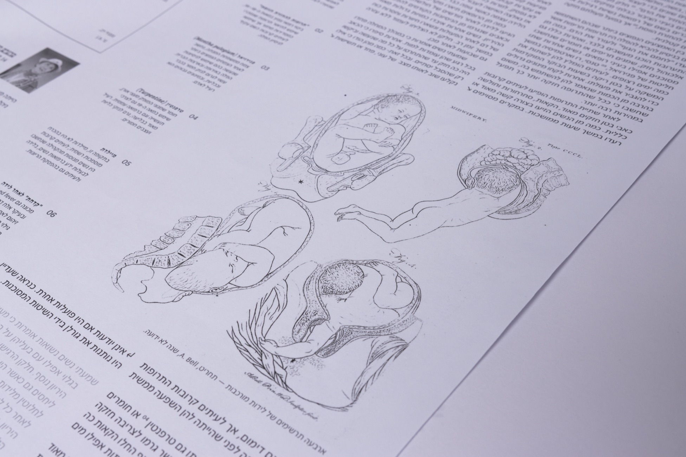

THE FINE PRINT
OF THE PILL
Description
Broadsheet Design,
Complex Typography, Editorial Research
2026
Academic · Bezalel
“The Fine Print Of The Pill” is a four-spread broadsheet developed around May 9, 1960, the date the FDA approved the first oral contraceptive pill. Inspired by the pill’s accompanying information leaflet, the project critically examines its history and medical and social implications. The large format, dense typography, and layered information emphasize the contrast between the pill’s tiny size and its far-reaching impact.




A typographic system combining historical Hebrew typefaces, transparency, dashed rules, and white space organizes large amounts of information through subtle hierarchies. Rather than relying on dramatic changes in type size or weight, rhythm and flow emerge through the relationships between text, imagery, and negative space. Closer reading reveals additional layers of information and meaning.
The research brings together 19th-century medical documents, correspondence between the pill’s developers, records of clinical trials in Puerto Rico, women’s testimonies, and contemporary studies. These sources form a layered sequence of information, accounts, and imagery that gradually reveals the complex history behind the pill.


